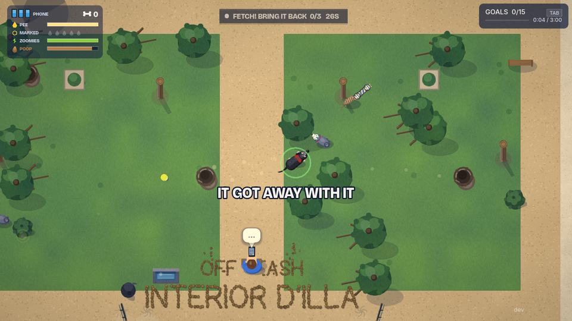

L'Eixample
The grid of cut corners
Ildefons Cerdà's unmistakable grid of octagonal chamfered corners, flower-stamped panot sidewalks, tour groups angled toward the basilica pond and plane trees shading every xamfrà on the way to a quiet interior d'illa garden.
- Off-leash stop
- INTERIOR D'ILLA (Fenced dog yard)
- Beat the clock
- Under 3:00
Screenshots



Goals (15)
- Mark 5 spots
- Have 4 good long sniffs
- Get the phone home without a scratch
- Get yourself home without a bump
- Get your business bagged
- Bring the ball back 3 times
- Scarf down 2 dropped snacks
- Mark the lamps on 3 cut corners
- Get photographed by a tour group
- Paddle in the pond by the basilica
- Land an x3 trick combo
- Snatch the croissant off the terrace table
- Spell LEASH
- Find the hidden pernil
- Beat the clock (under 3:00)